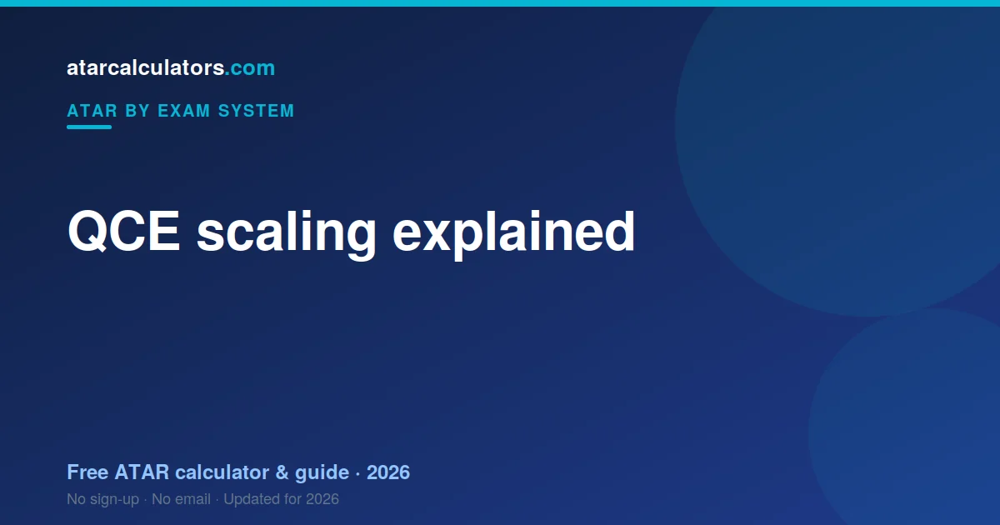

QCE scaling adjusts each subject’s results so students can be compared fairly across different subjects. The QCE is the newest system, from 2019, using external exams plus internal assessment. A subject scales up when its cohort is strong, and down when it is broad. Scaling reflects how strong a subject’s cohort is, not how hard the content is. QTAC does the scaling.
Key takeaways
- Scaling lets students who took different subjects be compared fairly.
- A subject scales up when its cohort is strong across all subjects.
- Scaling reflects cohort strength, not difficulty.
- Your position within a subject never changes — only how it counts.
- QTAC does the scaling, using each year’s results.
- The QCE is the newest system, from 2019, with external exams and internal assessment.
- You cannot game scaling — a strong result always beats a weak one.

What is QCE scaling?
Scaling is the step where QTAC adjusts each QCE subject so that a result in one subject is worth the same as the same result in another. It happens after you get your subject results, on the way to your ATAR.
Without scaling, subjects would not be comparable. A result in one subject might represent a very different level of achievement than the same result in another. Scaling puts them on a common footing.
The QCE system is relatively new, introduced in 2019, and combines school-based internal assessment with external exams. Scaling sits on top of that, turning subject results into comparable figures for your ATAR.
Why scaling exists
Scaling exists to be fair. Students take different subjects, and some subjects attract stronger cohorts than others. Without scaling, your ATAR could depend on your subject choice as much as your ability.
Scaling removes that. It means no student is better or worse off simply because of the subjects they chose. That fairness is the whole reason it exists.
How scaling works
QTAC looks at how the students in a subject perform across all of their subjects, not just that one. If a subject’s students tend to be strong everywhere, the subject scales up. If the group is broad, it scales down.
Crucially, your position within the subject never changes. Scaling shifts the whole subject up or down; it does not move you relative to your classmates. It only changes how your result counts towards your ATAR.
How much does scaling move a result?
The effect varies by subject. In a strong-scaling subject, a result might rise once scaled. In a broad-entry subject, the same result might fall a little.
The shifts are larger for the strongest-scaling subjects, and smaller in the middle of the range. So the exact effect depends on both the subject and where your result sits.
Subjects that scale up
The subjects that scale up are the ones with strong cohorts. Specialist Mathematics scales strongly, as do Chemistry and Physics. Mathematical Methods scales well too, and high-level languages scale highly.
These subjects share one thing: the students who take them tend to do well across their whole QCE. That is what lifts the scaling, not the difficulty of the content itself. See the highest-scaling QCE subjects.
Subjects that scale down
Broad-entry subjects, and many Applied subjects, tend to scale lower. This does not make them bad choices.
A subject that scales modestly can still give a strong scaled result if you rank near the top of it. Scaling lowers the whole subject, but your position within it still counts.
Why hard does not mean high-scaling
It is a myth that difficult subjects automatically scale up. Scaling reflects the strength of the cohort, not the content. A subject could feel hard and still scale modestly if its students are mixed in ability.
So do not choose a subject just because it has a tough reputation. Choose it because strong students take it and you can be one of them.
Should you choose for scaling or for results?
For results, almost always. Scaling only rewards your position in the cohort. If you pick a high-scaling subject you are weak in, you rank low and gain nothing from the scaling.
A strong result in a subject you enjoy beats a weak result in a high-scaling one. Ability and motivation matter more than the scaling table.
Scaling and your best five
Scaling and the best-five rule work together. QTAC scales every subject, then combines your best five scaled results. So a subject only helps your ATAR if its scaled result is strong enough to make your top five.
This is why a well-scaling subject you rank poorly in may not even count. The winning combination is strong results in subjects that scale reasonably, across your best five.
Does scaling change each year?
Yes. Scaling is recalculated every year, based on that year’s cohorts. So a subject’s scaling can move a little from one year to the next. The broad pattern is stable, but the exact figures shift.
This is why you should not pick subjects purely on last year’s scaling. Choose for your strengths, and treat scaling as a minor tiebreaker rather than the deciding factor.
Estimate your ATAR
Rather than guess how subjects scale, see how your own results land. Our QCE ATAR calculator applies scaling to your subject results and gives you an estimated ATAR.
Try a few subject combinations. Seeing the real effect on your ATAR is far more useful than a rumour about which subjects “scale best”. You can also read how scaling works more generally.
A concrete scaling example
Imagine two students, each with the same strong result. One took a subject with a strong cohort; the other a broad-entry subject. After scaling, the first student’s result rises, while the second’s falls a little. Neither student’s rank within their subject changed, but their scaled results differ.
This shows what scaling really does. It does not reward or punish individuals; it adjusts whole subjects so they can be compared.
Your job is to rank as high as you can within your subject, whatever its scaling. Scaling then takes care of fairness across subjects.
The English question
English matters because it is required for eligibility. You must complete an English subject and meet a literacy standard to be eligible for an ATAR. Scaling still applies to English like any subject.
Take the English subject you can do best in. A strong result may well be one of your best five, and even if it is not, meeting the requirement is essential.
So give English real attention. It protects your eligibility and can contribute to your ATAR at the same time.
Applied subjects and scaling
Applied subjects and VET qualifications can count towards your ATAR, within limits, but they tend to scale lower than the strongest General subjects. This reflects their broader cohorts, not their value.
So if you are strong in an applied or vocational area, it can still contribute to your best five. Just weigh it against your General subjects and how each scales.
As always, a strong result in a subject that suits you is worth more than a weak result in a higher-scaling one.
Small-cohort subjects and scaling
Small-cohort subjects, like some languages, often scale very well. This is because the students who take them tend to be strong across all their subjects, and the group is small and select.
This does not mean you should chase a small subject just for scaling. It means that if you have the ability and interest, a strong small-cohort subject can be a genuine asset.
As always, your rank within it is what counts.
Why scaling feels unfair but is not
Scaling can feel unfair when a strong result scales down. But the alternative is worse: without scaling, students could gain an advantage simply by choosing broad subjects, regardless of ability.
Scaling levels that out, so your ATAR reflects your ability rather than your subject choice. It treats every subject by the same principle.
Once you see it as a fairness mechanism, the logic makes sense, even when a particular result stings.
Scaling in one idea
Scaling comes down to a single idea: it makes subjects comparable, so your ATAR reflects your ability rather than your subject choice. A subject scales up because its students are strong, and down because its cohort is broad.
Your position within a subject never changes. So the practical lesson is freeing: do not chase the scaling table. Rank as high as you can in subjects that suit you, and let scaling do its fair, behind-the-scenes work.
Common questions
What is QCE scaling and why does it exist?
QCE scaling adjusts each subject so results can be compared fairly across different subjects. It exists so your ATAR reflects your ability, not just your subject choice, since some subjects attract stronger cohorts than others.
Do harder subjects scale higher?
Not automatically. Scaling reflects how strong a subject’s cohort is across all subjects, not how difficult the content is. A hard subject with a mixed cohort can scale modestly.
How much does scaling move a mark?
It varies by subject. A strong-scaling subject can lift a result, while a broad-entry subject can lower it a little. The effect is larger for the strongest-scaling subjects.
Does scaling change each year?
Yes. Scaling is recalculated each year based on that year’s cohorts, so a subject’s scaling can shift slightly. The broad pattern is stable, but the exact figures change.